오늘의 arXiv Top 15
2026-11-19 (목) · cs.CV / cs.LG / cs.RO / cs.CL / cs.AI New submissions 전수 평가
512
신규 논문
185
cs.CV
118
cs.LG
85
cs.RO
42
cs.CL
82
cs.AI
15
정밀 리뷰
분야별 필터
전체 15개 논문 표시 중
1
82점
RecallFlow: Episodic Memory as the Source Distribution of Generative Robot Policies
Manipulation
relevance 9/10
Robotics (cs.RO)
지나간 장면을 기억해야 하는 조작 과제에서, 기억을 policy의 조건으로 넣지 않고 flow policy가 생성을 시작하는 source distribution으로 만듦. 과제 5개 모음 RecallSuite에서 평균 성공률 84.6%로 가장 강한 baseline보다 20.3퍼센트포인트 높음.
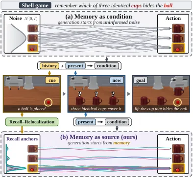
무슨 문제인가
컵 3개 중 공이 든 컵 고르기처럼, 어떤 행동을 할지 정하는 정보가 행동할 때는 이미 화면에서 사라진 조작 과제가 많음. 기존 diffusion·flow policy는 과거 관측 기록을 조건으로 더 넣고, 생성은 여전히 Gaussian noise에서 시작함. 그러면 한 network가 길고 중복된 기록에서 관련 대상을 골라내는 일과 움직임을 만드는 일을 함께 맡음. 이 때문에 spurious correlation이 생기고, 기억할 항목이 늘수록 성공률이 내려감.
어떻게 푸나
RecallFlow는 flow matching이 어떤 source distribution에서든 action 분포로 옮길 수 있다는 점을 이용해, 기억을 source에 담음. 매 action chunk가 끝날 때 그 chunk 첫 frame의 patch token(3인칭·wrist 카메라)을 episodic memory bank에 씀. Recall–Relocalization(기억을 현재 화면에 다시 대응시키는 모듈)에서는 현재 token이 memory attention으로 bank를 읽음. 이어서 학습되는 query인 recall slot K개가 기억과 현재 화면을 차례로 읽고, heatmap으로 현재 화면 특징을 모음. Recall Anchors는 각 slot을 action chunk 위의 Gaussian 하나(anchor)로 바꾸고, 표준 Gaussian과 섞어 mixture source를 만듦. anchor는 flow loss가 아니라 demonstration의 negative log-likelihood로 학습함. transport network(DiT)는 현재 관측만 조건으로 받아 source 샘플을 action chunk로 다듬음. 따라서 기억은 source를 거쳐서만 행동에 들어가고, 기억이 비면 memoryless flow policy와 같아짐.
결과
- RecallSuite(직접 만든 기억 의존 시뮬레이션 조작 과제 5개, 과제당 demonstration 250개)에서 평균 성공률이 84.6%임. 지난 120 step의 frame을 조건으로 받는 long-history Diffusion Policy(DP)는 64.3%임. 항목 4개를 기억하는 NoRepeat-4에서는 64.7% 대 15.0%임.
- 공개 benchmark MIKASA-Robo(기억이 필요한 시뮬레이션 과제 5개)에서 평균 80.4%로, 논문에 보고된 최고값 Chameleon 75.1%, GMP 67.8%보다 높음. 다른 방법 수치는 각 논문 보고값이라 학습 조건이 다름.
- 같은 memory를 transport network의 조건으로 넣은 변형과 비교하면 NoRepeat 성공률이 92.0%에서 97.0%로, MarkedPair(표시된 container 두 개를 건드리는 과제)가 51.0%에서 67.3%로 오름. chunk당 추론 시간은 memoryless FM보다 1.1 ms 늘어남.
- 실제 xArm 7에서 과제 4개를 과제당 24회 평가함. 평균 성공률이 82.3%로 long-history DP의 63.5%보다 18.8퍼센트포인트 높음.
한계
memory bank는 단일 팔 탁상 장면의 시각 token을 32개 entry까지만 저장하므로, 길고 촘촘한 과거가 필요한 과제에는 과거를 요약하는 memory가 필요할 수 있다고 저자가 밝힘. MIKASA-Robo의 RememberColor9에서는 36.3%로 Chameleon 53.3%보다 낮음. 실로봇은 seed 1개, 과제 4개이고 language 조건·multi-task policy는 실험하지 않았으며, 본문에 코드 주소가 없음.
누리랩 연구와의 연결
- robot memory를 policy 입력이 아니라 생성 시작점으로 넣는 방식이라, 기억 의존 VLA·manipulation 연구에서 비교 대상이자 바로 붙여 볼 설계임.
- NoRepeat에서 생성 시작 시점에 아직 안 건드린 container로 향하는 샘플 비율은 RecallFlow 99.6%, long-history DP 4.0%임. 이 분석은 source 단계에서 잘못된 기억을 잡아내는 failure detection이나 test-time steering으로 이어 볼 수 있음.
2
82점
How Uncertain Is My Action? Self-Correcting Visual Planning with Frozen World Models
World Model
relevance 8/10
Robotics (cs.RO)
로봇 actuator가 명령을 몰래 회전·증폭해 실행할 때, 가중치를 바꾸지 않은 world model의 예측과 실제 관측의 차이로 그 어긋남을 추정하고 계획을 고침. PushT 성공률이 0.650에서 0.862로 올라 실제 어긋남을 알려 준 oracle(0.864)과 같은 수준이 됨.
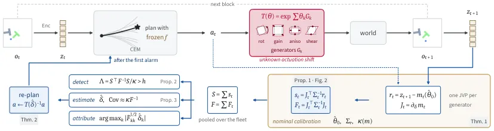
무슨 문제인가
pixel로 학습한 latent world model에 sampling 기반 MPC를 붙인 visual planner는 명령한 행동이 그대로 실행된다고 가정함. 실제 배치에서는 축 보정이 틀리거나 관절이 미끄러져 모든 명령이 같은 방식으로 바뀌어 실행될 수 있음(actuation shift). 고정된 world model은 이런 실행 오차를 알아챌 방법이 없어서, 계획이 목표에서 점점 멀어짐. 기존 test-time adaptation은 예측 오차를 줄이려고 가중치나 작은 residual module을 고치지만, actuation shift와 모델 자체의 예측 오차를 구분하지 못함.
어떻게 푸나
ACTUS(Action Uncertainty Self-correction)는 actuation shift를 명령에 곱해지는 Lie group 변환 T(θ)로 둠. 평면 이동에는 회전, 등방 gain, 비등방 gain, shear의 4개 generator를, 3차원 이동에는 축별 gain 3개와 회전 3개의 6개 generator를 씀. 고정된 predictor에 'θ만큼 바뀌어 실행됐다면' 나올 다음 latent를 예측시키고, 실제로 관측된 다음 latent와의 차이(residual)를 구함. 이 residual을 generator마다 JVP(Jacobian-vector product) 한 번으로 얻은 방향에 투영한 값이 shift score이고, 그 공분산이 Fisher information이 됨. shift score로 Rao test(score 기반 가설 검정)를 해서 shift가 있는지 판정함. 이어서 Gauss-Newton으로 shift δ(기준점 θ0에 대한 변환)를 추정하고 Cramér-Rao 오차 막대를 붙임. 정보로 정규화한 크기가 가장 큰 generator를 원인으로 지목함. alarm이 울리면 그때부터 모든 계획 행동에 추정한 shift의 역변환 T(δ̂)^-1을 곱해 다시 계획함. 검출 threshold와 over-dispersion 계수 κ, 기준점 θ0는 shift가 없는 nominal rollout으로 미리 맞춰 두므로, 검출 AUROC와 지연을 shift가 일어나기 전에 예측할 수 있음.
결과
- world model을 LeWM(pixel에서 end-to-end로 학습한 JEPA world model)으로 고정하고 시각 계획 benchmark 3종의 shift 254개를 측정함. PushT·TwoRoom은 평면 이동 명령, OGBench-Cube는 3차원 이동 명령으로 움직임. 이 shift 254개에서 측정한 검출 AUROC가 이론 예측과 최대 0.05 차이로 맞음. 같은 조건에서 residual energy를 쓰는 검출보다 AUROC가 최대 0.38 높음.
- 성공률이 PushT에서 고정 planner의 0.650에서 0.862로, OGBench-Cube(3차원 블록 조작)에서 0.378에서 0.432로 오름. ACTUS가 alarm을 낸 것과 같은 계획 block부터 실제 shift 값을 받는 oracle(Oracle@1)은 0.864와 0.440이며, 95% 신뢰구간 안에서 차이가 없음.
- 가중치나 residual module을 고치는 test-time adaptation 5종(AdaJEPA, OpTTA, JEPA-TTT, Sandwich-Residuals, ALRA)은 고정 planner보다 최대 2.3퍼센트포인트만 오름. 이 중 4종은 두 과제 모두에서 오히려 내림. ACTUS는 두 번째 world model인 DINO-WM에서도 재조정 없이 PushT 성공률을 18.0퍼센트포인트, Cube 성공률을 7.0퍼센트포인트 올림.
- 실제 SO-101 로봇팔에서 관절 encoder에 안 잡히는 base 관절 10도 offset을 wrist camera로 10.1도로 읽어냄. 이를 보정하자 open-loop reach의 중앙값 오차가 36~38 mm에서 3.0~5.5 mm로 내려 반복 측정 noise(3.2~5.1 mm)와 같아짐. 실험 세션 전에 무작위로 뽑아 고정해 둔 shift 3개에서는 실제 shift로 보정할 때 얻는 오차 감소의 92~94%를 얻음.
한계
shift가 미리 정한 선형 변환 family 안에 있다고 가정하며, 그 밖의 고장은 generator 방향으로 설명되지 않는 residual energy로 이상 여부만 알림. 시뮬레이션 검출은 episode 50개를 묶은 fleet 단위로 score를 모으고, 실로봇 과제는 목표 8개로 가는 open-loop reach뿐임. Cube에서는 보정 후에도 nominal 성공률 0.520에 못 미치는데, 저자는 이를 alarm 지연과 명령 범위 clipping 탓으로 봄. 부록은 게재 후 공개 예정이고 코드 주소는 본문에서 확인 불가.
누리랩 연구와의 연결
- 고정된 world model을 학습 없이 failure detection·diagnosis·recovery에 쓰는 구체적인 절차이며, 검출 성능을 nominal 데이터로 미리 예측하는 통계적 보장까지 붙음. world model 기반 test-time optimization과 실패 복구 연구에서 바로 비교 대상이 됨.
- '이 행동이 다르게 실행됐다면'을 world model로 물어 관측과 맞추는 방식은 counterfactual reasoning을 실행 오차 추정에 쓴 사례임. VLA의 action 출력단 보정으로 확장할 여지가 있음.
3
80점
LoRN: Low-Rank Noise Steering for Generative Robot Policies
VLA
relevance 9/10
Robotics (cs.RO)
고정된 world-action model의 가중치는 그대로 두고, RL actor가 저차원 random subspace 안에서 video 초기 noise만 골라 넣게 해서 행동을 바꿈. world-action model 3개, 모델-과제 쌍 10개의 평균 성공률이 43.0%에서 69.2%로 오름.
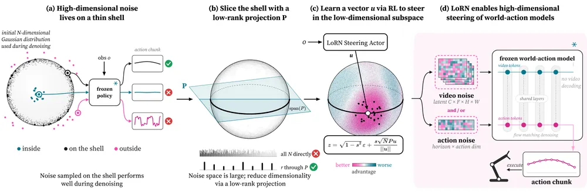
무슨 문제인가
noise steering은 diffusion·flow-matching policy를 고정한 채 초기 noise를 고르는 작은 actor만 RL로 학습해 성능을 올리는 방법임. world-action model은 미래 video 예측과 action 생성을 한 모델에서 함께 하는 policy임. 기존 noise steering 방법(DSRL 등)은 noise 차원이 작은 policy용이라, Cosmos3-Edge의 506,880차원 video noise처럼 큰 입력에서는 actor가 찾아야 할 공간이 너무 넓음. 큰 policy는 학습 때 아주 좁은 norm 범위의 noise만 봐서, norm이 조금만 벗어나도 실패함. Cosmos3-Edge는 noise 크기 배율이 0.95~1.05 밖이면 실패하고, DSRL 방식 noise는 정상 norm의 0.003배라 성공률이 0%였음.
어떻게 푸나
LoRN(Low-Rank Noise Steering)은 actor가 전체 noise 대신 r개 계수 u만 출력하게 함. 학습 전에 Gaussian 행렬의 QR 분해로 N×r 직교 행렬 P를 한 번 뽑아 고정하고, Pu를 단위 벡터로 만든 뒤 √N을 곱해 noise 방향을 정함. 이 방향과 새 Gaussian sample을 √(1−s²)와 s의 비율로 섞어, s와 상관없이 noise 제곱 norm의 기댓값이 N으로 유지되게 함. 섞는 세기 s는 u의 길이로 정하고 상한 α를 둠. 고정된 policy가 이 noise로 action chunk를 만들고, actor는 SAC로 학습함. world-action model에서는 video noise와 action noise를 각각 다시 뽑아 action이 얼마나 바뀌는지 재는 probe로, reward 없이 어느 입력을 steering할지 고름. 세 모델 모두 video noise 쪽 action 변화가 3.3~6.1배 커서 video noise를 steering함. 저자는 rank r인 random subspace가 개선 noise 영역을 놓칠 확률이 N과 무관하게 (1−p)^r 이하임을 증명함(p는 개선 noise 영역이 noise 구면에서 차지하는 비율).
결과
- world-action model 3개(Cosmos3-Edge, DreamZero-14B, DreamZero-5B)를 RoboLab·LIBERO의 시뮬레이션 조작 과제에서 평가한 10개 모델-과제 쌍을 씀. 평균 성공률이 base policy 43.0%, DSRL action steering 50.1%, LoRN video steering 69.2%임. video steering이 10개 중 9개 쌍에서 가장 높고, DreamZero-5B Moka pot에서만 DSRL이 앞섬.
- Cosmos3-Edge steering 규칙 비교(MustardInLeftBin)에서 LoRN은 α=0.9일 때 46.4%임. 같은 세기의 additive steering은 noise norm이 약 1.7배로 커져 0.0%이고, 관측에 따른 offset을 noise에 더하고 그 norm을 penalty로 제한하는 기존 방법 LP-DS는 20.7~25.4%임.
- π0, π0.5, Diffusion Policy의 action noise steering 12개 과제에서 LoRN은 9개 과제에서 초기 학습 구간 평균 성공률이 가장 높음(동률 포함). 최종 성공률은 π0와 Diffusion Policy에서 DSRL과 3퍼센트포인트 안이고, π0.5 Load dishwasher에서 69.5%로 DSRL 49.6%보다 높음.
- 시뮬레이션에서만 학습한 actor를 실제 bimanual YAM 로봇에 그대로 옮김. GR00T N1.7 cube to bowl은 10회 중 base 0회, DSRL 4회, LoRN 6회 성공함. GR00T N1.7 marker to cup은 base 0회, DSRL과 LoRN 모두 4회임. SFT한 π0.5 cube handover는 3회에서 8회로 오름. 실로봇 실험은 action noise steering이고 video steering은 실로봇에서 보이지 않음.
한계
steering은 고정된 policy가 이미 낼 수 있는 행동만 끌어낼 수 있고, 없는 기술을 새로 가르치지는 못함. 이론은 subspace 안에 개선 noise가 있다는 것만 보이고 actor가 이를 얼마나 쉽게 찾는지는 보이지 않아, rank와 학습량은 실험으로 정함. 모델마다 평가 protocol과 학습 예산이 달라 10개 쌍 평균은 서로 다른 조건을 섞은 값이고, 실로봇은 과제 3개, 과제당 10회뿐임.
누리랩 연구와의 연결
- 큰 VLA나 world-action model의 가중치는 고정하고, 초기 noise를 고르는 작은 actor만 RL로 학습해 과제에 맞추는 방법임. test-time optimization과 VLA 적응 연구에서 baseline으로 쓸 수 있음.
- base policy가 한 번도 성공하지 못한 과제에서 noise만 바꿔 성공하는 결과는, failure recovery를 policy 재학습 대신 noise 재선택으로 하는 방향의 근거가 됨.
4
80점
$Z$-sight: Unifying Vision-Language-Action and Latent World Modeling
VLA
relevance 9/10
Robotics (cs.RO)
VLA가 현재 장면을 보는 vision encoder의 token 공간에서 미래 장면 token과 action을 함께 denoising하게 만들어, video generator 없이 미래 예측을 제어에 씀. 실제 Unitree G1 휴머노이드 과제 6개의 평균 성공률이 가장 강한 baseline Fast-WAM의 53.3%에서 73.3%로 오름.
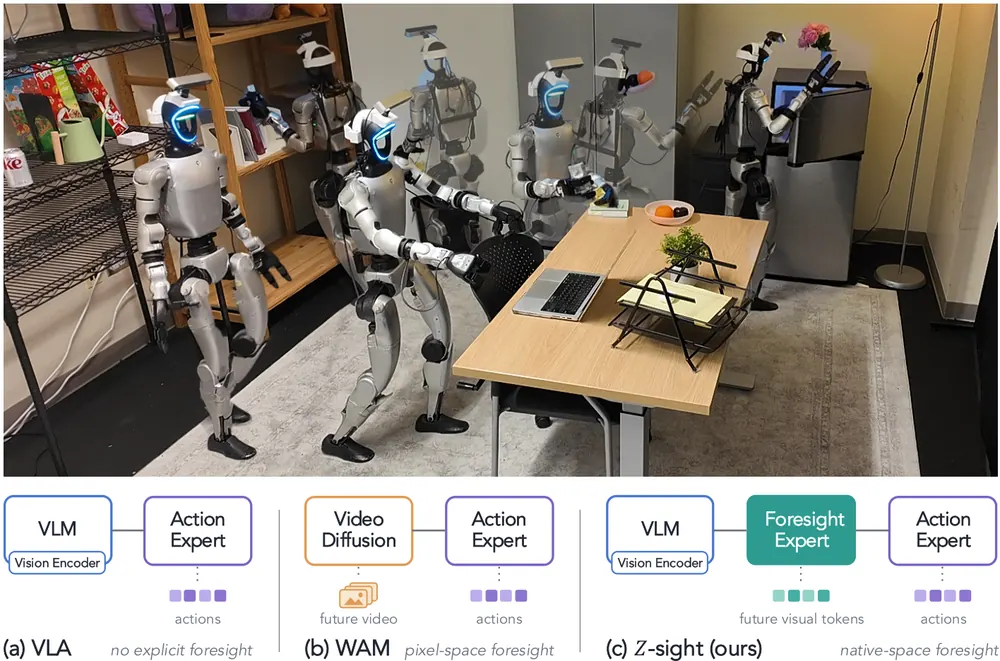
무슨 문제인가
보통의 VLA는 현재 관측을 action으로 바로 옮기고 action label만으로 학습하므로 장면이 어떻게 변할지에 대한 학습 신호가 적음. 미래 video와 action을 함께 만드는 world action model(WAM)은 물리 변화를 배우지만 큰 video diffusion backbone을 돌려야 해서 느림. latent 공간에서 미래를 다루는 기존 방법은 policy 내부 feature를 미래 embedding에 맞추기만 하거나, DINOv2·V-JEPA 2 같은 고정된 외부 encoder의 feature를 예측함. 후자의 경우 예측 대상 공간이 VLM이 실제로 보는 feature 공간과 따로 놂.
어떻게 푸나
Z-sight는 Qwen3.5-2B VLM, 미래를 예측하는 foresight expert, 연속 action을 만드는 action expert를 mixture-of-transformers(MoT)로 묶음. MoT는 여러 transformer stream이 attention으로 서로를 읽는 구조임. 입력은 언어 지시, proprioceptive state, 여러 카메라의 관측 이력이고 출력은 30 step action chunk임. foresight expert는 VLM vision encoder가 미래 프레임에서 만들 spatial token을 flow matching으로 예측함. 예측 target은 같은 encoder의 EMA teacher가 만들므로 encoder가 학습으로 바뀌어도 target 공간이 함께 따라감. collapse를 막으려고 target에는 stop-gradient를 걸고, 미래 예측 loss는 VLM으로 gradient가 들어가지 않게 막음. action expert는 VLM prefix와 foresight stream을 attention으로 읽고, 추론 때는 두 expert가 같은 noise schedule로 10 step 동안 미래 token과 action을 동시에 denoising함. 학습은 약 2,000시간의 egocentric 사람 영상으로 VLM을 pre-training하고, 약 2,750시간의 robot 데이터에 사람 영상 20%를 섞어 mid-training한 뒤 대상 로봇 데이터로 post-training하는 3단계임.
결과
- 실제 Unitree G1에서 과제 6개를 과제당 10회 시도함. 평균 성공률은 73.3%(60회 중 44회)이고 video 생성 기반 WAM인 Fast-WAM 53.3%, 휴머노이드용 VLA Ψ0 40.0%, GR00T N1.7 36.7%, π0.5 26.7%보다 높음. 다단계 과제 4개만 보면 72.5% 대 Fast-WAM 50.0%임.
- SIMPLE(휴머노이드 전신 loco-manipulation 시뮬레이션 benchmark, 원격조작 과제 12개를 난이도 L0~L2로 평가)에서 평균 성공률 81.9%를 냄. 가장 강한 baseline GR00T N1.7보다 9.6퍼센트포인트, Fast-WAM보다 15.9퍼센트포인트 높음.
- 같은 구조에서 미래 예측 loss만 끄면 SIMPLE Hard(가장 어려운 L2) 성공률이 73.1%에서 25.0%로, RoboTwin 2.0(양팔 조작 과제 50개) 무작위 조건(C2R) 성공률이 40.1%에서 11.6%로 내림. target을 고정된 DINOv2-B feature로 바꾸면 C2R 성공률이 26.6%로 자체 EMA target의 40.1%보다 낮음.
- 가중치를 고정하고 추론 때 foresight stream을 다른 episode의 예측으로 바꾸면 SIMPLE Hard 성공률이 73.1%에서 11.7%로 내려가, policy가 예측 내용에 실제로 기댐을 보임. 한 chunk 계산 시간은 RTX 4090에서 109.5ms로 π0.5의 120.5ms보다 짧음.
한계
탁상 조작에서는 우위가 작음. LIBERO 평균 97.7%는 Motus와 같고, 본 비교 표의 RoboTwin 2.0 C2R 성공률 39.0%는 π0.5의 46.0%보다 낮음(ablation 표의 40.1%와는 다른 평가임). 미래 예측 loss를 끈 변형(SIMPLE Hard 25.0%)은 foresight branch를 아예 뺀 변형(68.3%)보다 크게 낮음. 그래서 성능 차이에는 예측 학습의 효과와, 학습 안 된 stream이 action expert를 방해하는 효과가 섞여 있음. 저자도 밝히듯 foresight는 관측만으로 미래를 예측하고 후보 action에 조건을 걸지 않으므로 action별 결과 비교나 test-time planning은 보이지 않았음.
누리랩 연구와의 연결
- VLA 안에 latent world model을 넣는 구체적 설계와, 추론 때 foresight stream을 바꾸거나 끊어서 policy가 예측에 기대는지 보는 개입 실험 틀을 제공함. world model 기반 VLA 연구에서 policy가 예측에 기대는지 검증하는 방법으로 그대로 쓸 수 있음.
- 예측한 미래 token과 실제 관측 token의 차이를 재면 failure detection 신호로 쓸 수 있음. foresight를 후보 action에 조건화하면 test-time planning으로 확장할 수 있어, 저자가 남긴 한계가 곧 후속 연구 주제임.
5
80점
Counterfactual World Models: JEPAs That Reason About "What If"
World Model
relevance 7/10
Machine Learning (cs.LG)
관측된 결과에 world model이 예측한 두 행동의 차이만 더하면, 재학습 없이 '그때 다른 행동을 했다면'을 예측하는 counterfactual world model이 됨. 시뮬레이터 4개에서 frozen encoder 위에 학습한 같은 factual predictor(JEPA world model)의 counterfactual R2가 38~46%에서 86~96%로 오름.
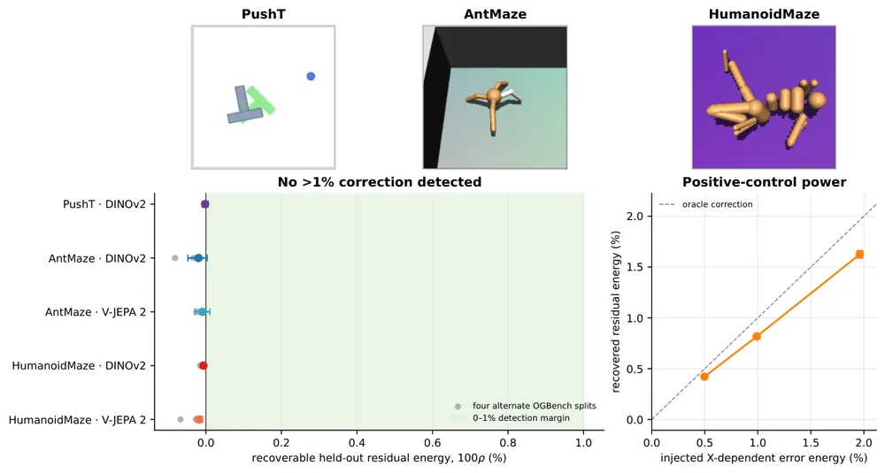
무슨 문제인가
world model은 보이지 않는 외란(배를 미는 해류 등)을 모른 채 행동의 결과를 예측하므로, 가능한 외란에 대한 평균 결과만 내놓음. 실패를 분석하거나 credit을 나누려면 '실제로 겪은 그 외란 아래에서 다른 행동을 했다면 어땠을지'라는 individual counterfactual이 필요함. 저자들은 factual 전이 데이터만으로는 이 질문에 답할 수 없음을 증명함. 데이터가 무한하고 생성 모델이 factual 분포를 완벽히 맞춰도, 같은 사건에서 두 행동의 결과가 어떻게 짝지어지는지는 정해지지 않음.
어떻게 푸나
counterfactual world model은 이미 학습된 factual world model μ를 그대로 씀. 입력은 관측된 전이(현재 embedding, 실행한 행동 a, 다음 embedding)와 대안 행동 a'임. 출력은 관측된 다음 embedding에 μ(z, a')와 μ(z, a)의 차이를 더한 값임. 관측 결과와 예측의 차이(residual)가 그 사건의 외란 효과를 담고, world model은 행동을 바꾼 효과만 담당함. 근거는 행동과 외란이 서로 다른 힘으로 들어오는 물리계에서는 둘의 상호작용이 전이 시간 h에 대해 2차라는 점임. 저자들은 오차가 외란 분산 대비 O(h^2)임을 보이고, unpaired factual 데이터로는 이보다 나은 rate가 불가능하다는 minimax 하한도 증명함. 보정은 embedding 공간에서 하거나, factual frame의 물리 상태 label로 학습한 readout(embedding을 위치·관절각 같은 물리량으로 바꾸는 고정된 함수) 위에서 할 수 있음. 학습 시에는 frozen DINOv2·MAE encoder 위에 factual predictor만 학습하고, 추가 파라미터나 paired counterfactual 데이터는 쓰지 않음.
결과
- 렌더링된 물리 시뮬레이터 4개에서 frozen DINOv2·MAE encoder를 씀. 참 counterfactual 물리량을 설명하는 비율(physical counterfactual R2)이 같은 predictor를 그대로 쓸 때 38~46%에서 readout 위 보정 시 86~96%로 오름. state label 없이 embedding에서 바로 보정하면 73~94%임.
- 이 결과는 시뮬레이터와 전체 state를 알지만 실제 외란은 모르는 oracle predictor보다도 높음. DINOv3, SigLIP 2, CLIP, EVA-02 encoder로 바꿔도 같은 4개 환경에서 81~95%임.
- hindsight planning(한 번 관측한 사건에서 목표에 도달했을 행동을 사후에 찾는 과제)에서 성공률이 35~69%임. 시뮬레이터를 알지만 관측 결과를 쓰지 않는 planner는 14~23%임.
- 배가 해류에 밀리는 예제에서 소용돌이 파장을 10에서 1.25 boat length로 줄이면 상호작용 비율 ρ(0이면 counterfactual이 정확함)가 0.022에서 0.487로 오름. 같은 조건에서 배 drift 예측의 R2는 76.9%에서 20.6%로 내림. 이론이 예측한 실패 방향과 맞음.
한계
모든 실험이 시뮬레이션이고, 실로봇이나 실제 영상 데이터에서의 counterfactual 검증은 없음. 행동과 외란이 따로 들어온다는 가정이 핵심이며, 접촉 불연속, 명령에 곱해지는 gain fault, 접힌 좌표(folded coordinates)에서는 깨질 수 있음을 저자도 보임. 상호작용이 작은지는 factual 데이터로 확인할 수 없어 실제 배치 전에 쓸 수 있는 판정 기준이 없음.
누리랩 연구와의 연결
- counterfactual reasoning과 failure diagnosis를 world model에 붙이는 가장 단순한 baseline임. VLA rollout 실패 후 '다른 행동이었다면'을 재학습 없이 계산해 hindsight relabeling이나 recovery 행동 탐색에 쓸 수 있음.
- 다만 manipulation은 접촉이 많아 저자가 밝힌 실패 조건에 해당함. 접촉 구간에서 오차가 얼마나 커지는지 재는 것이 바로 해볼 실험임.
6
78점
F$^3$: What Makes Good Experience in World-Action Models?
World Model
relevance 9/10
Artificial Intelligence (cs.AI)
world-action model(WAM)이 자기 rollout에서 뽑은 경험 기록을 언제, 어떤 경로로 넣을지 학습시켜, 경험을 넣으면 원래 성공하던 episode가 실패로 바뀌는 문제를 줄임. Cosmos 3 Nano의 MolmoSpaces 성공률을 55%에서 67%로, 학습에 쓰지 않은 RoboLab에서 29.2%에서 40.0%로 올림.
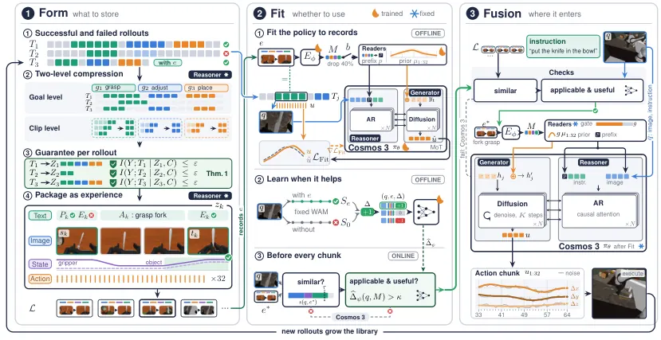
무슨 문제인가
배포된 WAM(관측과 action을 함께 예측하는 policy)이 계속 나아지려면 자기 rollout 경험을 다시 써야 함. 기존 방법은 과제·행동·단계가 비슷한 기록을 골라 context로 넣으면 도움이 된다고 가정함. 저자의 paired 실험에서 Cosmos 3 Nano에 가장 비슷한 자기 기록을 텍스트와 frame으로 넣으면 원래 풀던 21개 episode가 실패로 바뀌고 7개만 새로 풀림. 그 결과 성공률이 55%에서 41%로 내려감. 따라서 경험의 가치는 출처나 유사도가 아니라 지금 상태에서 그 기록을 넣었을 때 성공 확률이 오르는지로 판단해야 한다는 것이 이 논문의 출발점임.
어떻게 푸나
F3(Form·Fit·Fusion 세 부분으로 된 방법)는 좋은 경험을 「기록을 넣었을 때의 성공 확률 − 넣지 않았을 때의 성공 확률(∆) > 0」으로 정의하고, 이를 세 부분으로 나눔. Form은 성공·실패 rollout 모두에서 WAM에서 지시문과 이미지를 읽는 transformer인 Reasoner가 달성한 하위 목표를 나누고, 목표마다 그것을 이룬 32-action 구간을 골라 frame과 state로 검증된 것만 남김. 남긴 기록마다 precondition, effect, 동작 이름을 텍스트로 붙여 library에 넣음. Fit은 기록과 같은 동작을 보이는 다른 rollout 구간을 짝지은 200개 예시로 policy, experience encoder, reader를 한 번 학습하고, 40%는 기록 없이 학습해 원래 행동을 유지함. 이어서 같은 seed로 기록을 넣은 경우와 뺀 경우를 이어 실행해 성공 차이를 작은 MLP로 회귀시켜 gain predictor를 만듦. 배포 때는 action chunk마다 유사도 τ 이상, precondition 충족·effect 미달성, 예측 gain이 margin 초과라는 세 검사를 모두 통과할 때만 기록을 넣음. Fusion은 기록을 memory token으로 바꿔 Reasoner에는 instruction 앞 prefix로, flow matching Generator에는 noisy action token에 더하는 action prior로 넣음. 배포 중 가중치는 고정이고 새 rollout이 Form을 거쳐 library만 커짐.
결과
- MolmoSpaces(시뮬레이션 pick·pick-and-place instance 100개) 성공률이 native Cosmos 3 Nano 55%에서 67%로 오름. RoboLab(시뮬레이션 조작 과제 120개)에서는 Fit 학습에 쓰지 않았는데도 29.2%에서 40.0%로 오름. 둘 다 표의 VLA·WAM baseline 중 가장 높음.
- 같은 기록을 학습 없이 native Nano에 텍스트·이미지·action으로 모두 넣으면 MolmoSpaces 성공률이 12%로 내려감. 학습된 encoder와 reader를 거치면 같은 입력이 62%가 되고, Fit gate를 더하면 67%가 됨.
- 같은 library와 reader에서 유사도 threshold 대신 Fit gate를 쓰면 성공률이 MolmoSpaces 62%에서 67%, RoboLab 35.8%에서 40.0%로 오름. native Nano 대비 성공에서 실패로 바뀐 episode는 11개에서 9개로 줄고 새로 푼 episode는 18개에서 21개로 늘어남.
- 저자 재구현 비교에서 과제 단계별로 action 효과를 검색하는 Zeva 방식의 context 입력은 57%, 검색한 action embedding을 넣는 AED 방식은 54%에 그침. MolmoSpaces 기록 55개 중 약 3분의 1이 실패 rollout에서 나왔고, F3가 푼 67개 episode 중 35개가 실패 rollout 기록을 한 번 이상 씀.
한계
모든 실험이 시뮬레이션이고 실로봇 결과는 없음. MolmoSpaces 평가는 100개 episode이고 여러 seed 중 평균에 가장 가까운 run 하나만 보고하므로, 5퍼센트포인트 차이는 episode 5개 차이임. gain predictor 학습은 같은 상태에서 기록 유무로 두 번 이어 실행하는 paired continuation이 필요해 실제 환경에서 그대로 쓰기 어려움. backbone은 Cosmos 3 Nano 하나이고 기존 방법은 원 구현이 아닌 재구현으로만 비교함.
누리랩 연구와의 연결
- robot memory 연구에서 기록을 언제 넣을지를 유사도가 아니라 기록 유무에 따른 성공 확률 차이로 학습하는 방식이라, VLA·WAM에 retrieval memory를 붙일 때 비교 대상이 됨.
- 실패 rollout에서도 검증된 하위 동작을 뽑아 재사용하는 Form은 failure diagnosis·recovery에서 실패 궤적을 쓸 만한 단위로 나누는 도구로 쓸 수 있음.
7
78점
DiWALI: Diffusion Policy Learning in World Models via Latent Action Inference from Human and Robot Play
World Model
relevance 9/10
ICRA·IROS·RA-L 계열 양식 (추정)
Robotics (cs.RO)
action label이 없는 사람 영상과 로봇 play를 함께 써서 world model을 학습하고, diffusion policy를 그 안에서 모방하고 RL로 개선함. CALVIN 11개 과제에서 로봇 demonstration 없이 사람 demonstration만으로 평균 성공률 59.6%를 내어, 로봇 demonstration 5개로 학습한 Diffusion Policy의 35.2%보다 높음.
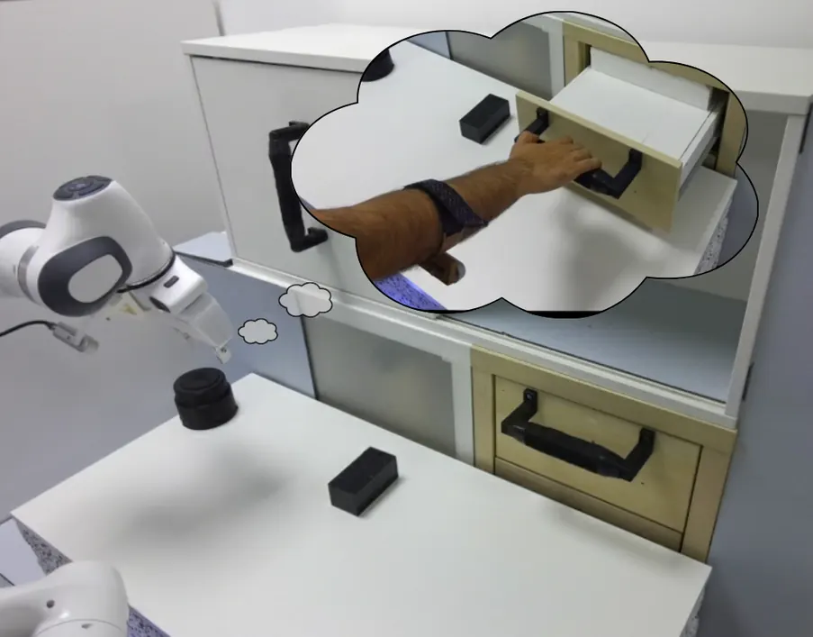
무슨 문제인가
로봇 조작 데이터는 teleoperation으로 모으므로 로봇 시간이 그대로 데이터 양의 한계가 됨. play 데이터로 학습한 world model 안에서 policy를 상상 rollout으로 개선하는 방법이 있지만, world model의 dynamics가 로봇 action에 조건화되므로 play와 demonstration 모두 action label이 있어야 함. 사람이 같은 작업 공간에서 시연한 영상은 훨씬 빨리 모을 수 있지만 action 신호가 없고 몸체도 다름. latent action model은 action 없는 영상에서 프레임 사이 변화를 뽑아 policy 사전학습에만 쓰고, 이를 policy 개선용 simulator로 쓰는 방법은 없었음.
어떻게 푸나
DiWALI(Diffusion policy learning in World models via Latent action Inference)는 네 단계로 학습함. 첫째, RSSM(recurrent state-space model) 기반 world model에서 로봇 명령 입력 자리를 inverse dynamics model로 바꿈. 이 모델은 연속한 두 프레임의 embedding에서 16차원 latent action을 뽑고, reconstruction과 KL loss만으로 end-to-end 학습되므로 사람 play와 로봇 play를 똑같이 학습에 씀. 둘째, world model을 고정한 뒤 로봇 play에서만 action decoder를 따로 학습함. decoder는 latent action과 latent state를 함께 받아 5 step 분량의 로봇 명령 chunk를 출력함. 명령 하나는 end-effector 변위와 gripper 명령으로 된 7차원임. 셋째, demonstration을 고정된 world model로 latent state와 latent action으로 바꾸고, diffusion policy가 latent action을 denoising하도록 behavior cloning함. 그래서 사람 demonstration도 action label 없이 모방에 쓰임. 넷째, demonstration의 성공 프레임으로 학습한 reward classifier를 reward로 삼아, world model 안의 상상 rollout에서 PPO로 policy를 fine-tuning함. 사전학습 policy 쪽으로 당기는 BC 항과 latent action 변화량 penalty를 더해 decoder가 본 적 없는 latent action으로 벗어나지 않게 함.
결과
- CALVIN(Franka 시뮬레이션 조작 benchmark)에서 로봇 play 3시간과 렌더링한 사람 팔로 바꾼 action 없는 play 3시간(CALVIN-H)을 씀. 로봇 demonstration 0개와 사람 demonstration 50개로 학습한 DiWALI의 11개 과제 평균 성공률은 59.6%임. 로봇 demonstration 5개로 학습한 Diffusion Policy(ViT)는 35.2%임. 실제 action이 있는 로봇 play로 학습한 world model의 latent state를 policy 입력으로 쓰는 DiWA는 23.6%임.
- 같은 play 데이터와 demonstration을 쓰지만 decoder를 world model과 함께 학습하고 latent state를 넣지 않는 CLAM-X는 8.2%에 그침. 로봇 demonstration 5개와 사람 demonstration 50개를 쓴 누적 ablation에서, decoder를 따로 학습하면 CLAM-X의 9.5%에서 18.7%로 오름. latent state를 decoder 입력에 넣으면 61.6%로 오름.
- world model 학습에 같은 로봇 play 3시간(play 6시간의 50%)과 로봇 demonstration 5개를 쓰면, 상상 속 PPO fine-tuning 뒤 평균 성공률이 DiWALI 67.4%, DiWA 50.4%임. 사람 demonstration 50개를 더한 DiWALI는 75.8%이고, 로봇 play를 6시간으로 늘리고 로봇 demonstration 50개를 쓴 DiWA만 80.4%로 이보다 높음.
- 실제 Franka 로봇에서 과제 3개(서랍 열기, 슬라이더 옮기기, LED 켜기)를 사람 demonstration 50개와 로봇 demonstration 5개로 학습함. 과제당 20회와 seed 3개 평균 성공률이 fine-tuning 전 53%에서 상상 속 fine-tuning 뒤 70%로 오름.
한계
시뮬레이션의 사람 play는 CALVIN 로봇 play 영상에서 로봇을 사람 팔 렌더링으로 바꾼 것이라, 실제 사람 동작의 차이는 실로봇 실험에서만 다룸. 실로봇 실험은 과제 3개이고 baseline과의 비교 없이 fine-tuning 전후만 보고함. 로봇 play 비율을 10%로 줄이면 성공률이 36.2%로 내려가므로 decoder 학습용 로봇 play는 여전히 필요하고, 사람 데이터는 로봇과 같은 작업 공간에서 모은 것만 씀.
누리랩 연구와의 연결
- world model의 action 공간을 latent action으로 바꿔 action 없는 사람 영상을 dynamics 학습과 상상 속 RL 양쪽에 쓴 사례임. world model 기반 test-time optimization이나 policy 개선 연구에서 로봇 데이터 수집 비용을 줄이는 설계로 참고할 수 있음.
- decoder에 latent state를 넣어야 latent action이 로봇 명령으로 풀린다는 ablation은, latent action 기반 VLA를 manipulation에 붙일 때 확인할 설계 항목이 됨.
8
78점
Comparing Each Generation with Independent Siblings Gives Video World Model Post-Training a Proper Objective for Outcome Frequencies
World Model
relevance 6/10
Computer Vision and Pattern Recognition (cs.CV)
video world model을 GRPO로 post-training할 때 각 생성을 녹화된 미래뿐 아니라 같은 입력의 다른 생성들(sibling)과도 비교해, 반복 생성의 결과 빈도가 데이터 분포를 따르게 함. Cosmos-Predict2.5-2B의 PisaBench 낙하 시점 KS distance를 가장 강한 기존 방법 DPH-RL의 0.276에서 0.241로 낮춤.
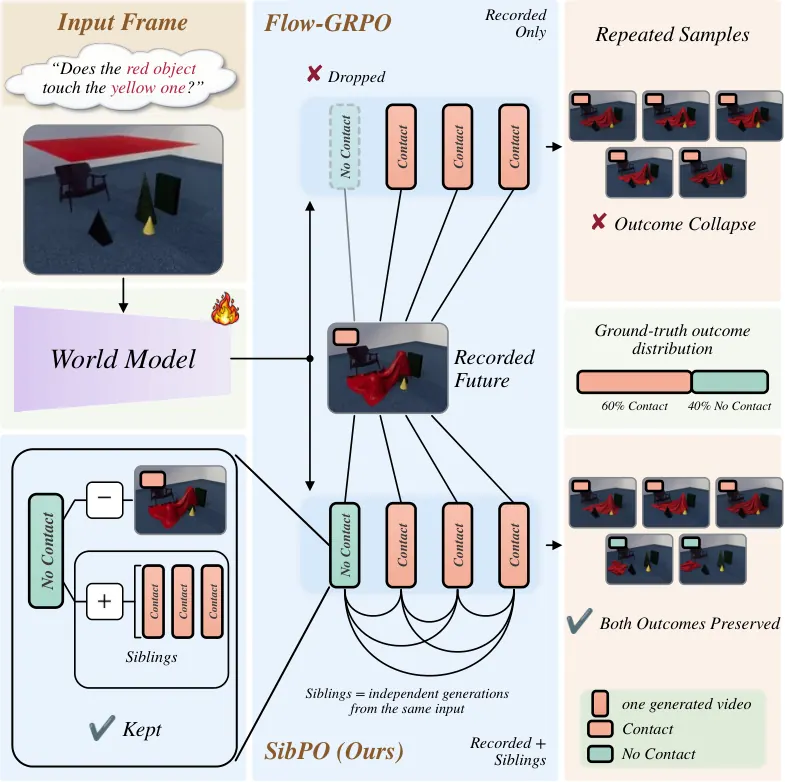
무슨 문제인가
video world model을 simulator로 쓰려면, 첫 frame만으로 결과가 정해지지 않을 때 반복 생성이 각 결과를 데이터에서 나오는 비율대로 만들어야 함. 기존 physics post-training은 생성 하나를 그 history의 녹화된 미래 하나와 비교해 reward를 줌. 이 reward의 기대값은 모델 분포에 선형이라 항상 가장 흔한 결과만 만드는 모델에서 최대가 됨. 실제로 PISA(낙하 영상의 segmentation·optical flow·depth를 녹화와 맞추는 reward)로 post-training한 checkpoint는 실영상 궤적 오차를 7.6×10^-2에서 6.7~7.5×10^-2로 줄임. 그러나 착지 시점의 퍼짐은 simulator 폭의 0.81에서 0.63~0.74로 줄어듦. KL이나 diversity 항은 모드로 가는 정도만 늦출 뿐 데이터가 정한 빈도 목표를 주지 않음.
어떻게 푸나
출발점은 녹화된 결과의 log-likelihood가 모델 분포가 데이터 분포와 같을 때만 최대가 된다는 점임. 그 gradient는 녹화와 일치한 생성에, 모델이 그 결과를 만드는 빈도의 역수만큼 가중치를 줌. SibPO(Sibling-paired Policy Optimization)는 같은 history에서 독립 noise로 뽑은 G개 생성(sibling)으로 이 빈도를 추정함. 입력은 history와 녹화 미래 하나임. 고정된 outcome readout이 각 영상을 접촉 여부나 착지 frame 같은 결과 칸으로 바꿈. reward의 첫 항은 녹화와의 일치에 sibling으로 추정한 truncated inverse-frequency weight를 곱함. 둘째 항(sibling term)은 같은 weight에 sibling과의 일치를 곱해 뺌. 이 항이 truncation bias를 없앰. 그래서 group 크기와 상관없이 기대 objective가 모델 분포와 데이터 분포가 같을 때만 최대가 됨(strictly proper). advantage는 현재 샘플을 뺀 leave-one-out baseline과 이전 batch에서 구한 고정 scale로 계산함. 저자는 group 표준편차 정규화와 group 안 초기 noise 공유가 빈도를 다시 모드로 끈다는 것을 명제로 보이고, 둘 다 쓰지 않음.
결과
- PisaBench(초기 frame에서 깊이가 정해지지 않은 물체 낙하 50개, 해석적 착지 시점 분포와 비교)에서 Cosmos-Predict2.5-2B의 KS distance가 SibPO 0.241, DPH-RL 0.276, Flow-GRPO 0.329임. DPH-RL은 초기 policy와의 forward divergence로 다양성을 지키는 방법이고, Flow-GRPO는 GRPO를 flow model에 적용한 방법임. 생성한 착지 시점 분포의 IQR을 시뮬레이션 분포의 IQR로 나눈 값(1이 정답)은 SibPO 0.86, 녹화 비교 reward 계열 0.55~0.70임.
- Physion(물체 접촉 여부를 묻는 test 영상 1,200개)의 fair Brier score가 base 0.255에서 0.239로 내려감. 녹화 비교 reward 계열은 0.258~0.281로 오히려 오름. 실영상 L2 오차는 SibPO와 Flow-GRPO 모두 8.9×10^-2임.
- Wan2.2-5B와 Cosmos-14B에서 KS distance가 0.281과 0.254로, SibPO 계열 밖 최강인 EBFT(sibling과의 유사도를 빼는 quadratic feature matching)의 0.309와 0.283보다 9.1%, 10.2% 낮음. CogVideoX에서는 SibPO 0.262, DPH-RL 0.271로 신뢰구간이 겹침.
- world model로 쓴 iVideoGPT로 RT-1 policy 5개의 SIMPLER 과제 10개 성공률을 추정함(RT-1 Real2Sim protocol). 추정 오차가 DPH-RL 12.9×10^-2, SibPO 11.2×10^-2로 13% 낮음. 실로봇 실험은 없음.
한계
결과를 고정된 readout의 유한한 칸으로 정의할 수 있어야 하고, 목표 분포도 그 readout과, 두 결과를 같은 결과로 셀지 정하는 matching kernel이 정함. SibPO의 IQR 비율은 0.86으로 여전히 1보다 0.14 낮고, 저자는 readout 오류 비대칭과 KL penalty, 학습 예산 탓으로 설명함. guidance scale을 학습과 배포에서 다르게 쓰면 보정이 어긋나고, held-out 벤치마크는 장면 수가 적어 신뢰구간이 넓음. 코드 공개 여부는 본문에서 확인 불가함.
누리랩 연구와의 연결
- world model로 policy 성공률을 추정할 때 결과 빈도의 보정이 추정 오차를 줄인다는 근거를 줌. world model 기반 policy evaluation과 failure 확률 추정 연구에서 post-training 목표로 바로 쓸 수 있음.
- GRPO 계열 학습에서 advantage 정규화와 noise 공유가 objective를 바꾼다는 분석은, VLA RL fine-tuning에서 행동 분포가 모드로 쏠리는 문제를 점검할 때도 적용됨.
9
74점
LaST1.0: A Unified Latent World-Action Model with Control-Centric SpatioTemporal Reasoning
World Model
relevance 9/10
Robotics (cs.RO)
미래 영상을 통째로 예측하는 대신, 미래 wrist camera 장면에서 뽑은 기하 latent만 학습 중에 예측하게 하는 World-Action Model을 만듦. RLBench 10개 과제 평균 성공률을 가장 강한 baseline LaST0(미래 point cloud feature를 함께 예측하는 VLA)의 81.8%에서 92.0%로 올리고, 추론 때는 latent branch를 빼서 54.7ms에 action을 냄.
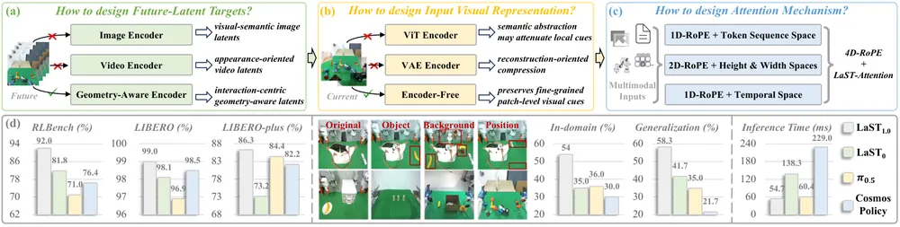
무슨 문제인가
World-Action Model(WAM)은 action 학습과 미래 상태 예측을 함께 학습해 policy가 환경 dynamics를 익히게 하는 모델임. 기존 WAM은 대부분 미래를 video 생성으로 예측하므로 texture, 조명, 배경처럼 다음 접촉과 상관없는 외관에 모델 용량을 많이 씀. 정밀 조작에 필요한 것은 물체의 국소 움직임, 로봇과 물체의 상대 기하, 접촉 상태임. 또 미래 예측을 추론 때도 계산해야 하면 closed-loop 제어가 느려짐.
어떻게 푸나
LaST1.0은 언어 지시와 현재 다중 시점 이미지를 받아 8 step 길이의 action chunk를 flow matching으로 출력함. 이미지는 vision encoder 없이 2층 convolution patch embedder로 바로 token이 되고, Qwen3-1.7B 앞 20층으로 초기화한 Transformer에 들어감. FFN은 context, latent, action 세 expert로 복제되고 token 종류에 따라 정해진 expert로만 감(Task-Routed MoE). LaST-Attention은 attention head를 token 순서, 이미지 높이, 이미지 너비, 시간 네 축으로 나눠 축마다 RoPE를 따로 거는 방식임. 학습 목표는 action과 함께, 미래 4개 시점(t+2, t+4, t+6, t+8)의 wrist view를 고정된 VGGT-Ω(3D 기하 foundation model)에 넣어 얻은 register token 16개씩을 예측하는 것임. attention mask가 action token이 latent token을 보지 못하게 막으므로, latent 예측은 공유 표현을 바꾸는 학습 시 regularizer로만 작동하고 추론 때는 빠짐. 사전학습은 AGIBot 등 양팔 gripper 데이터 255,760개 궤적, 약 3,900시간으로 함.
결과
- RLBench(Franka 팔 시뮬레이션 조작 과제 10개, 과제당 50회 rollout) 평균 성공률이 92.0%임. LaST0는 81.8%, video 생성 기반 WAM인 Cosmos Policy는 76.4%임. 같은 조건 ablation에서 latent 예측을 빼면 LaST0와 같은 81.8%, Wan 2.2 VAE video latent를 목표로 쓰면 85.4%, Uni3D-g point cloud latent를 쓰면 87.8%임.
- 미래 1개 시점만 쓰는 조건에서 미래 기하 latent를 예측하면 88.2%, 현재 관측의 latent를 맞추면 82.4%임. 미래 예측 자체가 성능을 올린다는 주장의 직접 근거임.
- LIBERO-Plus(카메라, 조명, 센서 noise 등을 바꾼 LIBERO 변형)에 LIBERO 학습 가중치를 추가 학습 없이 적용함. 평균 성공률이 86.3%로 π0.5의 84.4%, LaST0의 73.2%보다 높음. 원래 LIBERO 평균은 99.0%로 Cosmos Policy의 98.5%와 차이가 작음.
- 실로봇 2종(양팔 Franka, 양팔 Tianji에 gripper 또는 Sharpa hand)의 과제 5개를 과제당 20회 평가함. 마지막 단계까지 성공한 과제 성공률 평균이 54.0%로 π0.5 36.0%, LaST0 35.0%, Cosmos Policy 30.0%보다 높음. RTX 4090에서 1회 추론 시간은 54.7ms로 LaST0 138.3ms, Cosmos Policy 229.0ms보다 짧음.
한계
ablation은 모두 RLBench 한 곳에서만 했고, 3,900시간 사전학습이 성능에 얼마나 기여하는지 분리한 실험은 없음. 실로봇은 과제당 20회이고, 새 물체·배경·위치 일반화는 Put Object in Bag 과제 하나에서만 봄. 손 조작 과제 Stack Cups는 50.0%로 Cosmos Policy와 같음. 코드나 프로젝트 페이지 주소는 본문에서 확인 불가임.
누리랩 연구와의 연결
- world model을 추론 때 돌리지 않고 학습 시 regularizer로만 쓰는 설계와, 미래 target 종류(기하, video, semantic)를 같은 조건에서 바꾼 ablation은 VLA용 world model 연구의 비교 기준으로 쓸 수 있음.
- 예측한 미래 latent에서 end-effector와 물체의 상대 위치를 linear probe로 0.23cm 오차로 읽어 냄. 이 latent branch를 남겨 두면 실행 전 접촉 실패를 미리 판단하는 failure detection 신호로 쓸 여지가 있음.
10
74점
HINT-WAM: Hindsight-Informed Training for World Action Models
World Model
relevance 9/10
Robotics (cs.RO)
world action model(WAM)이 demonstration의 미래 영상을 보는 자기 자신을 teacher로 삼아, 자기 denoising 경로 위에서 action expert를 distillation함. reward와 simulator 없이 LIBERO-90 평균 성공률을 SFT의 78.88%에서 85.18%로 올림.
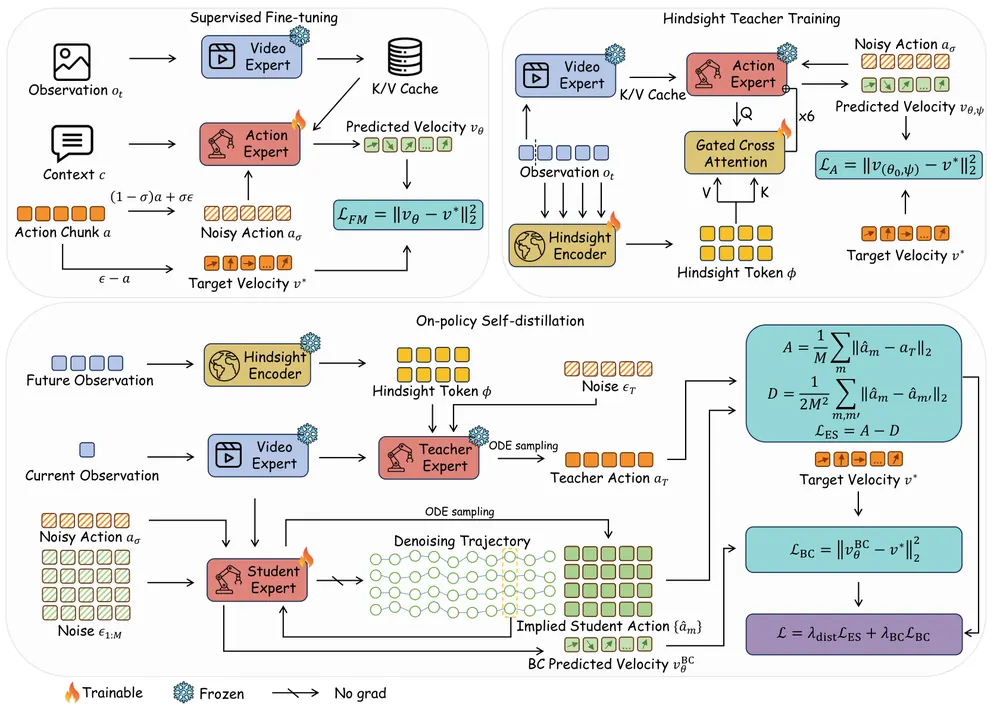
무슨 문제인가
WAM(world action model: 미래 영상 예측과 행동 생성을 한 backbone에서 같이 하는 policy)을 새 과제에 맞출 때는 보통 SFT를 씀. SFT의 flow-matching action expert는 demonstration 행동에 noise를 섞은 상태로만 학습하고, 추론 때 자기 sampler가 실제로 지나가는 중간 상태는 학습하지 못함(exposure bias). 또 현재 관측만으로는 demonstration 행동이 여러 그럴듯한 이어짐 중 어느 것인지 정해지지 않아 target이 모호함. on-policy RL은 이 불일치를 다루지만 sparse reward 탓에 탐색이 비싸고, reward는 행동을 어떻게 고칠지 직접 알려 주지 않음.
어떻게 푸나
HINT-WAM(Hindsight-Informed Training for WAM)은 같은 network를 teacher와 student로 씀. 기반 모델은 큰 video expert와 1.02B 크기 action expert로 된 Fast-WAM이고, video expert는 모든 단계에서 고정함. Stage 0에서 action expert를 demonstration으로 SFT함. Stage A에서는 SFT 모델을 고정하고, demonstration의 미래 영상 latent(hindsight)를 요약하는 encoder와 gated cross-attention adapter(약 13M parameter)만 학습해 teacher를 만듦. Stage B에서 student는 demonstration 관측에서 출발해 gradient 없이 자기 ODE를 풀고, 그 경로의 마지막 점에서 implied action(한 번의 forward로 얻는 깨끗한 행동 추정)을 뽑음. 이 student 표본 4개를 teacher 표본 1개에 energy score(표본 사이 거리로 두 분포를 맞추는 strictly proper scoring rule)로 맞추고, demonstration에 대한 behavior cloning 항을 더함. 배포 때는 미래 영상이 필요 없는 student만 씀.
결과
- LIBERO-90(기존 4개 LIBERO suite와 같은 로봇의 조작 과제 90개, 과제당 50회 시험)에서 평균 성공률이 SFT 78.88%에서 85.18%로 오름(90개 과제 paired t-test의 t=3.58). video expert까지 학습한 full SFT는 81.24%이고 학습 시간은 full SFT 127시간, HINT-WAM 71.6시간임.
- 이득의 출처를 가른 대조군에서 같은 단계를 BC로만 더 학습하면 71.56%로 내림. teacher가 다른 episode의 미래를 보면 80.28%, demonstration에 noise를 섞은 상태에서 distillation하면 80.74%에 그침. distillation 목표를 velocity 회귀로 바꾸면 79.02%로 SFT와 같음.
- LIBERO-90만 학습했을 때 원래 4개 suite 평균 성공률이 학습 전 96.55%에서 모든 방법 모두 크게 내림. HINT-WAM은 44.05%로 SFT 37.45%, full SFT 32.85%보다 덜 잊음. replay를 섞으면 새 과제 81.56% 대 SFT 76.70%, 원래 suite 95.10% 대 91.55%임.
- RoboTwin 2.0(양팔 조작 과제 중 어려운 25개)에서 clean 설정 성공률은 86.48%(공개 checkpoint)에서 87.04%로 거의 그대로임. BC 계속 학습보다 1.68퍼센트포인트 높지만 공개 checkpoint와의 차이는 유의하지 않음(25개 과제 paired t-test의 t=0.47).
한계
모든 실험이 시뮬레이션이고 실로봇 결과는 없음. LIBERO-90 평가는 학습 과제의 다른 초기 배치에 대한 일반화이며 처음 보는 과제가 아님. on-policy는 action sampler 수준만 뜻하고 관측은 demonstration에서 오므로, 제어 단계에 걸친 compounding error는 다루지 않음. 본문에 프로젝트 페이지가 있다고 적혀 있으나 주소는 텍스트에서 확인 불가함.
누리랩 연구와의 연결
- WAM과 flow-matching VLA를 reward 없이 post-training하는 방법임. 미래 정보를 privileged 입력으로 쓰는 teacher 구조는 world model 기반 policy 개선과 VLA adaptation 연구에 바로 비교 대상이 됨.
- energy score로 multimodal teacher 분포를 flow-matching policy에 옮기면 velocity 회귀의 mode averaging을 피함. 이 방식은 다른 diffusion policy distillation에도 쓸 수 있음.
11
72점
DOCK: Dual-Stream-Inspired Self-Supervised Object-Centric Representations Grounded in Robot Kinematics
World Model
relevance 8/10
Computer Vision and Pattern Recognition (cs.CV)
물체를 쥔 로봇의 관절각에서 forward kinematics로 구한 gripper 이동량을 정답 대신 써서, 물체 위치를 m 단위로 읽어 내는 표현을 물체 위치 label 없이 학습함(물체 token은 시뮬레이터 정답 mask로 모음). 이 거리를 planning cost로 쓰면 시뮬레이션 배치 과제 21개 중 15개를 풀어 실제 물체 위치를 쓰는 oracle과 같은 수가 됨.
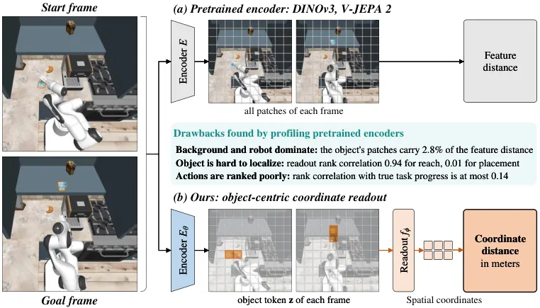
무슨 문제인가
DINO-WM, V-JEPA 2-AC 같은 latent planner는 예측한 미래 이미지와 목표 이미지의 feature 거리가 작을수록 목표에 가깝다고 보고 행동을 고름. 저자들은 learned predictor 대신 시뮬레이터로 실제 실행한 미래를 넣어 이 가정만 따로 검사함. frozen DINO·V-JEPA encoder 6종에서 feature 거리와 실제 물체-목표 거리의 순위 상관은 최대 0.11이고, 물체 mask 중심점 거리는 0.87임. DINOv3 기준으로 feature 거리의 64.1%는 배경, 33.1%는 로봇 팔에서 오고 물체 patch 몫은 2.8%임. 물체를 원하는 곳에 놓는 과제에서는 cost가 물체가 아니라 배경과 팔을 따라가므로 planner가 좋은 행동을 고를 수 없음.
어떻게 푸나
DOCK(Dual-Stream-Inspired Self-Supervised Object-Centric Representations)은 시각 경로를 what·where·how로 나누는 영장류 dual-stream 가설을 본떠 세 부분을 함께 학습함. what은 사전학습 ViT-L/16(DINOv3 또는 V-JEPA 2)의 patch feature를 시뮬레이터 물체 mask 비율로 가중 평균한 1024차원 object token임. where는 두 frame의 object token을 3차원 좌표로 바꾸는 3층 MLP readout(spatial ruler)이며, 두 좌표의 차이가 gripper 이동량과 같아지도록 Huber loss로 학습함. 이동량은 7개 관절각에 forward kinematics를 적용한 gripper 위치의 차이이고, 안정적으로 쥔 물체는 gripper와 같이 움직인다는 가정으로 물체 이동량 대신 씀. how는 object token, proprioception, 실행한 행동을 받아 다음 object token을 예측하는 causal transformer임. 이 predictor는 EMA teacher의 token을 목표로 teacher forcing과 autoregressive rollout을 함께 학습함. 데이터는 RoboCasa 부엌 장면 21개에서 물체를 쥐고 옮긴 궤적 9,951개이며, 팔을 지운 이미지로만 학습해 팔 모양으로 위치를 맞히는 길을 막음. 시험할 때는 encoder와 readout을 고정하고 후보 이미지와 목표 이미지의 좌표 거리를 CEM planning의 cost로 씀.
결과
- 팔을 지운 이미지의 배치 과제 21개 closed-loop planning에서 DINOv3 기반 DOCK과 V-JEPA 2 기반 DOCK이 모두 15개를 풂. 실제 물체-목표 거리를 쓰는 oracle도 15개이고, mask 중심점+크기는 10개, frozen feature 거리는 최대 9개, 공개된 V-JEPA 2-AC predictor는 1개임.
- 후보 300개의 cost 순위와 실제 물체-목표 거리의 Spearman 상관이 DINOv3 기반 DOCK에서 0.915이고, mask 중심점은 0.868, 같은 mask pooling을 한 frozen DINOv3는 0.346임. 가장 낮은 cost 후보가 최선 후보보다 먼 거리(regret)는 12.1 mm로, mask 중심점+크기의 22.6 mm보다 낮음.
- 학습에서 본 적 없는 로봇 팔을 그린 이미지에서 DINOv3 기반 DOCK은 12개를 풀고, mask 중심점은 8개를 풂. 다만 이 조건에서 초기 후보 순위 상관은 mask 중심점(0.452)이 DOCK(0.435)보다 조금 높음.
- 처음 보는 부엌 배치와 물체 범주로 이루어진 과제 9개에서 추가 학습 없이 순위 상관 0.635~0.740을 보임. frozen feature는 최대 0.482이고, 성공 과제 수는 최대 6개 대 3개임.
한계
모든 실험이 시뮬레이션이고, 후보 미래도 learned predictor가 아니라 시뮬레이터가 만든 것이라 학습한 dynamics predictor를 planning에 쓴 결과는 본문에서 확인 불가임. object token을 만들 때 시뮬레이터가 준 정답 물체 mask를 쓰고, 이동량 감독은 물체를 단단히 쥐고 거의 돌리지 않는다는 가정에 기댐. 모델마다 학습 seed가 하나뿐이고, 로봇 팔이 보이는 조건과 새 배치에서는 성공 과제 수가 크게 낮아짐.
누리랩 연구와의 연결
- world model 기반 test-time planning에서 cost 자체를 시뮬레이터 미래로 따로 검사하는 진단 절차는, 우리 planner의 실패가 predictor 탓인지 cost 탓인지 가르는 데 그대로 쓸 수 있음.
- 로봇 proprioception을 metric 감독으로 쓰는 object-centric 표현이라, object-centric 3DGS나 scene graph에 물체 위치를 m 단위로 붙이는 연구에서 정답 pose 없이 학습하는 방법으로 비교해 볼 수 있음.
12
72점
Latent Action Policies from Suboptimal Data
RL
relevance 8/10
ICLR 양식 (추정)
Machine Learning (cs.LG)
LAPIS는 action 없는 영상에서 배운 latent action 공간에서 offline RL을 할 때, 데이터에 실제로 있던 state-latent 전이만 골라 flow policy로 배워서 물리적으로 실행 못 하는 latent를 피함. 궤적의 1%에만 action label이 있을 때 OGBench visual cube-single 성공률이 LAPIS 50%, 비교한 다른 방법은 모두 2% 이하임.
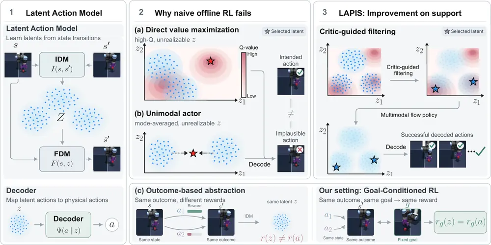
무슨 문제인가
LAM(Latent Action Model: action 없는 영상의 전후 장면 차이를 latent action으로 압축하는 모델)으로 얻은 latent policy는 보통 behavior cloning으로만 학습됨. 실패 궤적이 섞인 suboptimal 데이터에서 더 나은 policy를 뽑으려면 offline RL이 필요하지만, latent 공간에 그대로 적용하면 잘 안 됨. 저자는 원인으로 latent action의 세 가지 성질을 듦. 같은 latent도 상태에 따라 실현 가능 여부가 갈리고, 실현 가능한 두 latent 사이의 보간은 실현 불가능할 수 있음. 또 결과가 같은 서로 다른 물리 행동이 한 latent로 묶여서, action에 따라 reward가 다르면 latent 최적과 물리 최적이 어긋남.
어떻게 푸나
LAPIS(Latent Action Policy Improvement on Support)는 critic으로 데이터 안의 좋은 state-latent 전이를 고르고, 그 전이만 flow policy로 배워 latent action을 만듦. 이론 근거로 먼저 같은 전이 데이터로 물리 action MDP와 latent action MDP를 짝지어 만들고 이론 조건을 보임. 결정론적 dynamics에서 데이터에 관측된 (state, latent) 쌍만 쓰는 batch-constrained latent policy의 개선은 decoding 후 물리 실행의 개선으로 그대로 이어짐(Theorem 1). reward가 전후 상태에만 의존하면 latent 최적 policy와 물리 최적 policy가 일치함(Theorem 2). 이를 따라 LAPIS는 미래 상태를 goal로 쓰는 goal-conditioned RL로 설정함. TD-InfoNCE contrastive critic은 어떤 미래 상태가 이 전이 뒤에 올 가능성을 contrastive 학습으로 추정함. 이 critic이 관측된 state-latent 전이마다 점수를 매기고, expectile regression으로 배운 상태-goal 기준값보다 높은 전이만 남김(gate). 이어 conditional flow matching policy가 전체 전이를 배우는 behavior branch와 gate를 통과한 전이만 배우는 high-value branch를 함께 학습함. 추론 때는 classifier-free guidance로 두 branch를 섞어 latent를 만들고, 소량의 action label로 학습한 decoder Ψ(a|z)가 이를 물리 action으로 바꿈.
결과
- OGBench visual suite(64×64 RGB 관측의 goal-conditioned offline RL 과제 모음)에서 action label 5%와 같은 LAM을 쓴 latent 공간 방법끼리 비교함. cube-single 성공률은 LAPIS 62%, 가장 강한 baseline HIQL(계층형 goal-conditioned offline RL) 56%, CRL(contrastive RL) 4%임. scene은 LAPIS 29%, HIQL 22%임.
- label 1%에서는 LAM, decoder, policy를 모두 1% label로 학습함. antmaze-medium 성공률은 LAPIS 29%, 적은 action label에 맞춘 SS-ORL·VPT-RL과 GCIVL·HIQL은 모두 0%임. 다만 antmaze 계열 5% 설정에서는 LAM+HIQL이 LAPIS보다 높음(medium 89% 대 49%).
- critic 최대화(max-Q)와 gate, deterministic actor와 flow actor를 교차한 ablation에서 cube-single 성공률은 max-Q+flow 5%, gate+deterministic 36%, gate+flow 62%임. 생성 latent를 실행 후 다시 encoding한 오차(round-trip 오차)가 기준을 넘는 비율은 scene에서 LAPIS 12.6%, max-Q 24.0%임.
- visual D4RL Franka Kitchen(여러 하위 과제를 잇는 조작 benchmark) partial 과제에서 label 5% 정규화 점수가 LAPIS 44%, CRL 26%, GCIQL 19%임.
한계
실험은 시뮬레이션 visual 조작과 navigation뿐이고 실로봇 실험과 language-conditioned 제어는 없음. 이론 보장은 결정론적 dynamics와 batch-exact decoder(그 state에서 관측된 물리 action 중 해당 latent를 실현하는 것만 고르는 decoder) 같은 조건에 기댐. 그런데 실제 구현은 state 없는 decoder와 classifier-free guidance를 써서 이 조건을 그대로 만족하지 않음. action에 따라 reward가 달라지는 과제는 실험하지 않았고, 본문에 코드 공개 주소가 없음.
누리랩 연구와의 연결
- latent action을 쓰는 VLA를 실패가 섞인 데이터로 개선하려 할 때, 데이터에 있던 전이 안에서만 개선해야 decoding 후에도 성능이 오른다는 조건과 진단 도구(round-trip 오차)를 그대로 가져다 쓸 수 있음.
- critic으로 전이를 거르고 flow policy로 다봉 분포를 배우는 방식은 manipulation용 offline RL과 test-time guidance 비교 실험의 baseline으로 쓸 만함.
13
68점
3DTouch: A Tactile-aware VLA Model with 3D Geometric Relations for Dexterous Manipulation
VLA
relevance 9/10
Robotics (cs.RO)
다섯 손가락 촉각 센서 값을 scene point cloud와 같은 로봇 base 좌표계에 놓고, 손과 물체 사이 거리 관계를 token으로 만들어 π0의 action expert에 넣음. 실로봇 dexterous 과제 5개의 평균 성공률이 π0의 23.0%에서 65.0%로 오름.
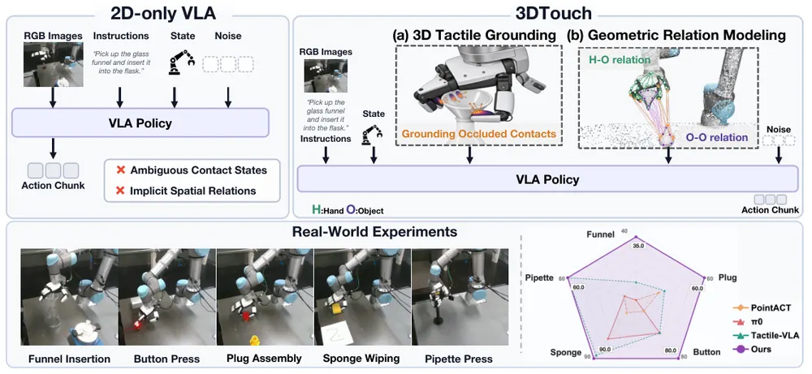
무슨 문제인가
손가락 다섯 개로 물체를 쥐는 contact-rich 조작에서는 손가락과 물체가 접촉 부위를 가려서 카메라 영상만으로는 어디가 닿았는지 알기 어려움. 겉보기에 비슷한 장면이라도 물체끼리의 상대 위치가 조금 다르면 접촉 상태가 달라지고, 필요한 행동도 달라짐. 기존 tactile-aware VLA는 촉각 값을 추가 token이나 robot state로 넣을 뿐, 각 taxel(촉각 센서 한 칸)이 공간의 어디에 있는지는 알려 주지 않음. downsample한 point cloud는 쥐는 동안 많이 가려지고 해상도도 낮아서 손과 물체, 물체와 물체 사이의 작은 틈을 담지 못함.
어떻게 푸나
3DTouch는 사전학습된 π0의 vision-language 입력은 그대로 두고, action expert에 넣을 3D token을 두 모듈로 만듦. 첫 번째 모듈인 3DTG(3D Tactile Grounding)는 RGB-D 영상을 4,096개 점의 point cloud로 바꾸고 PointNet++ 방식 encoder로 scene token 33개를 만듦. 같은 모듈이 손가락마다 120개인 taxel의 위치와 3차원 힘 벡터를 forward kinematics로 로봇 base 좌표계에 옮기고, 손가락별 MLP로 tactile token 5개를 만듦. 두 번째 모듈인 GRM(Geometric Relation Modeling)은 SAM 3D로 미리 복원한 물체 mesh를 가벼운 pose estimator가 추정한 6D pose로 현재 장면에 맞춤. 이 pose estimator는 SAM2(물체 분할 mask 생성)와 RGBTrack(depth 없이 6D pose를 추정·추적하는 방법)이 오프라인으로 만든 pose pseudo-label로 학습함. GRM은 손 keypoint 17개와 가까운 물체 표면 점 16개 사이의 변위·거리를 손가락별 hand-object token 5개로 묶음. 두 물체의 대표 영역 8개씩을 짝지은 64개 관계는 learnable query 5개로 모아 object-object token 5개를 만듦. 이 token들을 선형 투영해 noisy action token 앞에 넣고, 원래 flow-matching loss만으로 학습함. 출력은 팔 6개와 손 12개 관절의 action이고, 한 번 추론에 16 step을 실행함.
결과
- UR7e 팔과 XHand 손으로 과제 5개(funnel 삽입, plug 조립, 버튼 누르기, sponge 닦기, pipette 누르기)를 과제당 시연 약 100개로 학습하고 과제당 20회 평가함. 평균 성공률이 π0의 23.0%에서 65.0%로 오름. 가장 강한 baseline인 Tactile-VLA는 45.0%, π0.5는 44.0%, 3D VLA인 PointACT는 13.0%임.
- 촉각 값을 state에 그냥 붙이는 방식은 안정적으로 도움이 되지 않음. π0.5 + tactile의 평균은 43.0%로 π0.5의 44.0%와 비슷하고, 버튼 누르기는 75.0%에서 30.0%로 내려감.
- ablation에서 3DTG만 쓴 변형(GRM 없음)의 평균은 53.0%임. 이 변형에서 taxel 위치를 손 기준 좌표계로 바꾸면 42.0%로 내려가고, GRM 관계 token을 더하면 65.0%로 오름.
- 목표 물체 위치·방향을 조금 바꾼 조건에서 funnel 삽입과 plug 조립 두 과제의 평균 성공률 하락폭이 3DTouch는 5.0퍼센트포인트, π0.5 + tactile은 13.3퍼센트포인트임.
한계
실험은 한 로봇과 과제 5개, 과제당 20회뿐이고, 가장 어려운 funnel 삽입은 65.0% 평균과 달리 35.0%에 머묾. 물체마다 미리 복원한 mesh와 pseudo-label로 학습한 pose estimator가 필요하고, 관계를 볼 물체 쌍도 과제마다 정해 둠. 3DTouch는 π0 위에 만들었는데 π0.5에 붙였을 때의 결과는 없고, 코드 공개 주소는 본문에서 확인 불가함.
누리랩 연구와의 연결
- 촉각을 좌표가 있는 3D token으로 VLA에 넣는 방식이라, 누리랩의 dexterous manipulation과 tactile perception 연구에서 baseline으로 쓸 수 있음.
- 물체 mesh와 pose로 만든 hand-object, object-object 관계 token은 object-centric 3D representation과 scene graph를 VLA 조건으로 쓰는 사례임. 손 기준 좌표와 로봇 base 좌표 비교는 표현 설계 실험의 참고가 됨.
14
62점
Adaptive Action Horizon Selection via Flow-Field Uncertainty
VLA
relevance 10/10
IROS 2026 (comments 표기)
Machine Learning (cs.LG)
flow-matching VLA가 action chunk 하나를 만들 때 vector field의 divergence로 action마다 불확실성을 계산하고, 이 값으로 몇 개의 action을 실행한 뒤 다시 계획할지 고름. LIBERO-Pro에서 여러 chunk를 샘플링하는 AAC와 성공률은 비슷하면서 불확실성 계산 시간을 582.56ms에서 204.09ms로 줄임.
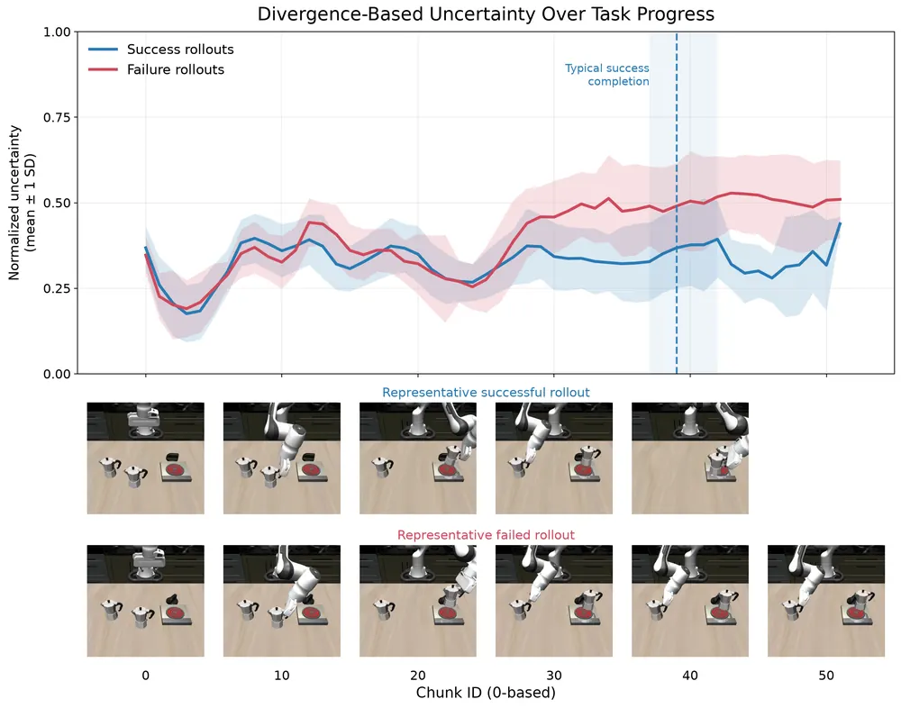
무슨 문제인가
action chunk를 closed loop로 실행할 때 실행 길이(execution horizon)를 길게 잡으면 동작이 매끄럽지만 새 관측에 늦게 반응함. 짧게 잡으면 자주 다시 계획하지만 동작이 끊기거나 과하게 반응함. AAC(Adaptive Action Chunking)는 action chunk를 여러 개 샘플링해 step마다 entropy를 재고, entropy가 급히 오르는 지점에서 실행을 끊음. 이 방식은 샘플 수만큼 추론 비용이 들고, 서로 다르지만 모두 맞는 전략(예: 어느 moka pot을 먼저 집을지)이 섞이면 이를 불확실성으로 잘못 셈.
어떻게 푸나
DUAC(Divergence-based Uncertainty-aware Adaptive Action Chunking)는 재학습 없이 pretrained flow-matching VLA에 붙이는 방법임. 입력은 관측·지시문·로봇 상태와 생성 중인 action chunk 하나의 중간 상태이고, 출력은 chunk 안 action마다의 불확실성 값임. 선행 연구(Xing 등)가 유도한 식을 써서, flow time τ에서 최종 action의 posterior covariance를 vector field의 Jacobian을 넣은 closed-form 식으로 나타냄. 이 covariance를 action 위치별 block으로 나누고 각 대각 block의 trace를 그 action의 불확실성으로 씀. 이 값은 그 action 위치에 해당하는 vector field Jacobian block의 trace(divergence)에 대한 1차식임. trace는 Hutchinson 추정(무작위 Rademacher 벡터로 trace를 근사하는 방법)과 Jacobian-vector product로 계산하며, 모든 실험에서 τ=0.9를 씀. 실행 길이는 AAC와 같은 규칙으로 정함: 앞에서부터의 평균 불확실성이 가장 급히 오르는 지점까지 실행하고 다시 계획함.
결과
- LIBERO-Pro(물체 위치를 점점 크게 옮겨 놓는 LIBERO 변형)에서 π0.5의 전체 성공률이 고정 길이 10 실행 47.2%, AAC 48.7%, DUAC 49.2%임. 불확실성 계산 시간은 A100에서 AAC(chunk 20개 샘플링) 582.56ms, DUAC(Hutchinson 무작위 벡터 40개) 204.09ms임.
- RoboCasa Kitchen-24(주방 조작 과제 24개)에서 전체 성공률이 DUAC 52.33%, 고정 길이 25 실행 51.79%, AAC 47.12%임. DUAC는 고정 길이 25보다 episode당 policy 호출 횟수가 약 15% 적음.
- 올바른 전략이 여러 개인 moka pot 두 개 옮기기 과제(100회)에서 성공률은 AAC와 DUAC 모두 75%임. DUAC는 AAC보다 평균 실행 길이를 7.53에서 8.83 action으로 늘리고 policy 호출을 58.01회에서 49.48회로 줄임.
- RoboCasa의 문 조작 과제 4개(OpenSingleDoor, OpenDoubleDoor 등)에서 DUAC가 모두 AAC보다 성공률이 높음. 양문 열기에서 36%에서 62%로 오름.
한계
모든 실험이 시뮬레이션이고 실로봇 결과는 없음. LIBERO-Pro와 RoboCasa 전체 성공률에서 가장 가까운 baseline과의 차이는 0.5~0.6퍼센트포인트이고, 반복 실행에 따른 분산이나 유의성 검정은 보이지 않음. DUAC의 chunk당 생성 시간(204.09ms)은 고정 길이 실행(68.26ms)의 약 3배임. 식 자체는 Gaussian 선형 interpolation 가정과 학습된 vector field의 정확도에 기댐.
누리랩 연구와의 연결
- 추가 학습 없이 flow-matching VLA 내부에서 불확실성을 꺼내는 방법이라 failure detection과 test-time 실행 제어의 신호로 바로 써 볼 수 있음. 그림 1처럼 실패 rollout 후반에 값이 높아지는지 실패 예측 지표로 따로 검증해 볼 만함.
- 여러 샘플 사이의 전략 차이와 한 궤적 주변의 불확실성을 나누는 관점은, 다중 해가 있는 manipulation 과제에서 recovery 판단 기준을 설계할 때 참고가 됨.
15
62점
Target-Consistent Action Guidance via Semi-Unbalanced Optimal Transport for Drifting World Models
World Model
relevance 8/10
Computer Vision and Pattern Recognition (cs.CV)
한 번의 network pass로 다음 장면을 만드는 drifting world model에서, action을 더 따르도록 예측을 현재 frame에서 밀어내는 보정(push)이 정답 미래에서도 멈추지 않는 문제를 optimal transport 기반 보정으로 없앰. Push-T의 행동 순위 상관(Kendall τ)이 가장 강한 baseline의 0.693에서 0.712로 오름.
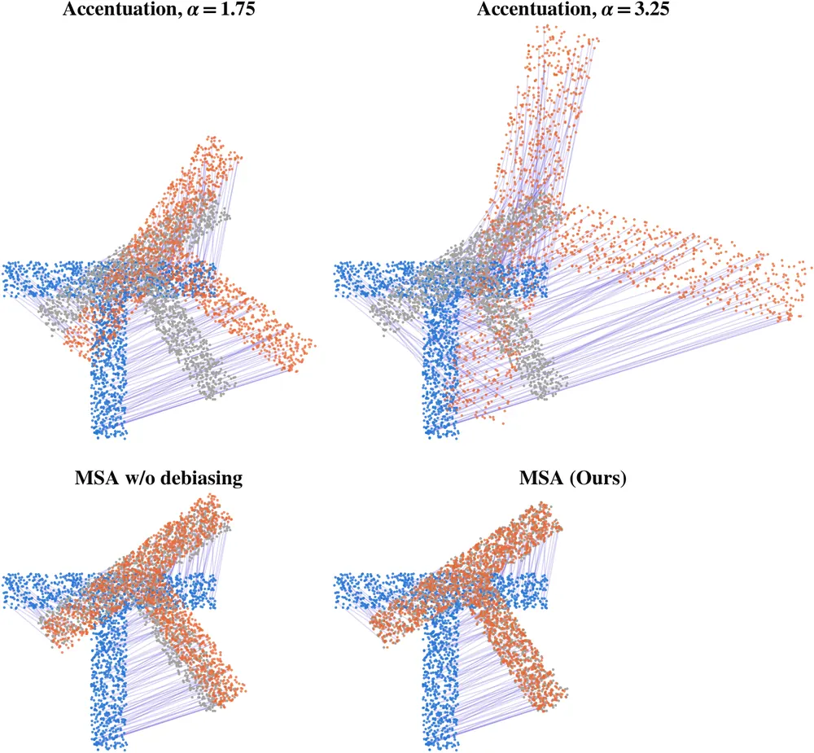
무슨 문제인가
world model로 후보 행동을 고르거나 policy를 오프라인으로 평가하려면 rollout이 많이 필요하지만, diffusion 기반 world model은 frame마다 network를 여러 번 돌려야 함. 기존 방법인 DriftWorld는 drifting model(학습 중에 반복을 끝내고 추론은 한 번에 하는 생성 방식)로 이 비용을 줄임. 대신 model이 현재 frame을 그대로 베끼지 않도록 예측을 현재 frame에서 밀어내는 accentuation을 씀. drifting field는 생성 sample을 데이터 쪽으로 끌고 서로 밀어내는 이동 벡터장임. 저자들은 kernel, balanced, unbalanced 세 field 모두에서 이 push가 예측이 기록된 미래와 같을 때도 남음(target bias)을 증명함. 정답 미래가 하나뿐인 world model에서 이 bias는 움직임을 과장하는 쪽으로 학습을 이끔.
어떻게 푸나
MSA(Mass-Share Accentuation)는 현재 frame을 negative로 쓰지 않고, 기록된 미래와 경쟁하는 두 번째 목적지로 둠. 각 예측은 semi-relaxed optimal transport로 자기 질량을 기록된 미래와 현재 frame에 나눠 보냄. 이 배분은 반복 계산 없이 sigmoid 식 하나로 바로 구해지며, 현재 frame으로 가는 몫이 예측에 아직 모자란 움직임의 양을 나타냄. 정답 미래가 받았을 몫을 이 값에서 빼서 목표 지점에서는 guidance가 0이 되게 함. 이 값을 예측 전체에서 평균해 기록된 움직임 방향으로 하나의 공통 이동 벡터를 만들고 W-Flow field(debiased Sinkhorn divergence의 Wasserstein gradient로 정의한 drifting field)에 더함. 그래서 예측 분포의 모양은 바꾸지 않고 위치만 옮기며, 추론 시 guidance scale이나 추가 계산이 없음. 저자들은 모든 예측이 한 점에 모인(collapsed) 경우에 기록된 미래가 움직임 방향의 유일한 고정점이고 guidance 크기가 예측 오차로 제한됨을 증명함.
결과
- 모든 model이 같은 T-block 위치에 도달할 수 있는 toy 실험에서 bias를 직접 잼. accentuation 세기 α=2.5일 때 W-Flow + accentuation은 진행도 2.504(1이 정답)로 수렴하고 끝점 오차가 1.050임. MSA는 시험한 모든 가중치(β=α−1)에서 1.001로 수렴하고 끝점 오차는 0.003임.
- Push-T와 Robomimic Lift, Can(시뮬레이션 조작 과제)에서 MSA가 세 과제 모두 Kendall τ, 반응 기울기, 상관이 가장 높음. 반응 기울기는 예측한 물체 이동을 simulator의 물체 이동에 비춘 기울기로, 1이 이상적이고 1 미만은 덜 반응함을 뜻함. 가장 강한 baseline 대비 τ는 0.019, 0.017, 0.010 오르고 기울기는 0.033, 0.035, 0.031 오름.
- BridgeV2(실로봇 영상 데이터)에서 action을 섞었을 때의 PSNR 하락(ΔPSNR, 클수록 action을 따름)이 baseline 최대 2.185에서 2.401로 오름. 실제 latent 움직임 대비 진행도는 최대 0.443에서 0.533으로 오름.
- GPC-Rank planner는 diffusion policy의 후보 행동 50개를 world model로 순위 매김. Push-T에서 이 planner의 simulator로 쓰면 최종 IoU가 두 policy에서 0.744, 0.740으로 baseline 최대 0.717, 0.722보다 높음. 저자들도 이 차이가 표준오차 하나 정도라 model을 가르지 못한다고 밝힘.
한계
target bias는 움직임을 과장하게(기울기 1 초과) 만드는데, 벤치마크의 모든 model은 기울기가 1보다 작음. 그래서 실제 데이터에서의 성능 향상이 bias 제거 때문이라는 것은 보이지 못함. baseline은 SD3 VAE latent에서 계산한 DriftWorld로, 공개된 feature-space DriftWorld보다 낫다는 근거는 아님. 실로봇 제어 실험은 없고 BridgeV2는 영상 예측으로만 평가하며, 정답 미래가 하나라는 가정은 확률적인 미래에서 성립하지 않음.
누리랩 연구와의 연결
- 후보 행동 순위를 매기는 one-step world model의 학습 field를 고치는 방법이라, test-time planning에 쓸 빠른 world model을 만들 때 바로 비교 대상이 됨.
- 현재 frame을 반사실적 목적지로 두고 모자란 움직임을 재는 방식은 world model이 action을 무시하는 실패를 진단하는 지표로도 쓸 수 있음.
오늘의 흐름
- 가중치를 고정한 world model을 실패 진단과 보정에 씀: 학습된 world model을 다시 학습하지 않고, 실행 오차를 찾거나 '다른 행동을 했다면'을 계산하는 데 씀. How Uncertain Is My Action?은 다음 장면을 가장 잘 설명하는 실행 변형을 추정해 actuator 오차를 찾고, Counterfactual World Models는 관측 결과에 두 행동의 예측 차이를 더해 counterfactual을 만듦.
- world-action model의 미래 예측을 행동 학습에 씀: 미래 장면을 함께 예측하는 world-action model(WAM)에서 미래 예측을 추론 결과가 아니라 행동을 배우는 신호로 쓰는 논문이 여럿 나옴. LaST1.0은 미래 기하 latent 예측을 학습 때만 쓰고, HINT-WAM은 미래를 보는 자신을 teacher로 삼으며, Z-sight는 encoder token 공간에서 미래와 action을 함께 만듦.
- policy 대신 초기 noise와 source distribution을 바꿈: 생성형 robot policy의 가중치는 두고, 생성의 시작점을 바꿔 행동을 고치는 방법이 나옴. LoRN은 RL actor가 저차원 subspace 안에서 video noise를 고르고, RecallFlow는 episodic memory를 flow policy의 source distribution으로 만듦.
- world model과 경험의 품질을 결과로 잼: 영상이 그럴듯한지가 아니라 결과 빈도나 성공 확률 차이로 world model과 경험 기록을 평가함. SibPO는 같은 입력에서 만든 여러 생성을 서로 비교해 반복 생성의 결과 빈도가 데이터 분포를 따르게 하고, F3는 WAM이 자기 rollout에서 뽑은 경험 기록을 넣었을 때와 뺐을 때의 성공 확률 차이로 기록을 넣을 시점을 정함.
- action label 없는 데이터에서 policy 배우기: 프레임 사이 변화에서 뽑은 잠재 행동 표현(latent action)으로 사람 영상과 suboptimal 데이터를 policy 학습에 씀. DiWALI는 사람 play 영상으로 world model을 학습해 그 안에서 diffusion policy를 개선하고, LAPIS는 데이터에 있던 전이 안에서만 latent policy를 개선해야 실행 성능이 오른다는 조건을 보임.
해볼 만한 연구
고정 world model로 VLA 실패 원인을 행동 단위로 가르기
- 질문: VLA rollout이 실패했을 때, 고정된 world model만으로 실패가 행동 선택 탓인지 실행 오차 탓인지 가를 수 있는지 밝힘.
- 첫 실험: LIBERO(시뮬레이션 조작 과제 모음)의 실패 rollout에서 counterfactual 보정(관측 + 두 행동의 예측 차이)으로 대안 행동의 결과를 계산함. 이 결과로 고른 recovery 행동과 무작위 재시도의 성공률을 비교함.
- 가장 가까운 연구: How Uncertain Is My Action?은 정해진 선형 변환 꼴의 actuator 오차만 다룸. Counterfactual World Models는 manipulation 접촉 구간을 실험하지 않음.
기억을 source distribution에 넣은 VLA의 실패 감지
- 질문: 기억으로 만든 source sample이 생성 전에 목표 쪽에 모이는 정도가, 잘못된 기억으로 인한 실패를 미리 알려 주는지 밝힘.
- 첫 실험: RecallSuite(지나간 장면을 기억해야 하는 조작 과제 5개 모음)에서 source sample의 분산과 flow vector field divergence 기반 불확실성을 실패 예측 지표로 놓고 AUROC를 비교함.
- 가장 가까운 연구: RecallFlow는 성공률만 보고 실패 예측은 하지 않음. Adaptive Action Horizon Selection은 불확실성을 실행 길이 선택에만 씀.
경험 기록의 이득 예측을 짝 실행 없이 학습하기
- 질문: 같은 상태에서 기록을 넣고 한 번, 빼고 한 번 실행하는 짝 실행 없이도 기록 유무에 따른 성공 확률 차이를 추정할 수 있는지 밝힘.
- 첫 실험: F3에서 기록을 넣을지 정하는 성공 확률 이득 예측기(gain predictor)를 시뮬레이션 짝 실행 대신 world model 안의 상상 rollout 짝으로 학습함. 두 방식의 MolmoSpaces(시뮬레이션 조작 benchmark) 성공률을 비교함.
- 가장 가까운 연구: F3는 같은 상태에서 두 번 실행하는 시뮬레이션 짝이 필요함. SibPO는 world model의 결과 빈도를 맞추는 방법이라 상상 rollout의 신뢰도를 올리는 데 같이 쓸 수 있음.
꼭 읽을 논문
- How Uncertain Is My Action?: 가중치를 바꾸지 않은 world model로 실행 오차를 검출하고 고치며, 검출 성능을 미리 예측하는 통계 절차까지 줌.
- RecallFlow: robot memory를 policy 조건이 아니라 생성 시작점으로 넣었고, 실로봇 과제 4개(학습 seed 1개)에서도 성공률이 baseline보다 높음.
- Counterfactual World Models: 재학습 없는 counterfactual 예측 규칙과, 관측 데이터만으로는 더 나은 추정 속도가 불가능하다는 minimax 하한을 함께 보임. counterfactual reasoning 연구의 비교 대상으로 쓸 수 있음.
- LoRN: 큰 world-action model을 가중치 수정 없이 noise 선택만으로 과제에 맞추며, world-action model 3개·모델-과제 쌍 10개의 평균 성공률을 43.0%에서 69.2%로 올림.